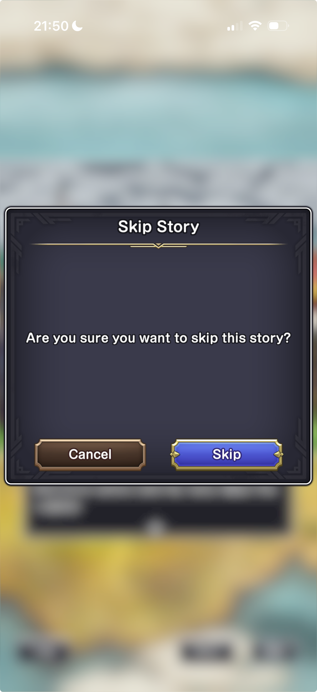
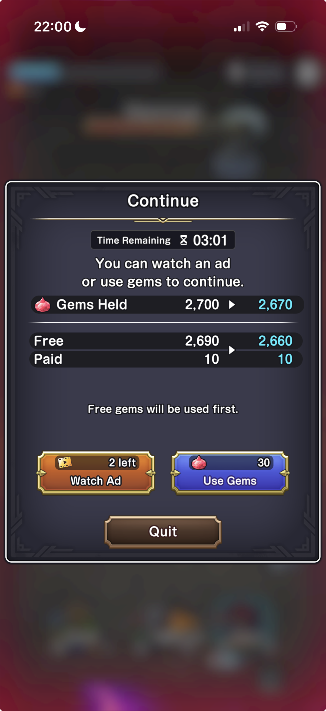

WISHFIRE · FEATURE DISCUSSION · 5 SEPTEMBER 2026
A quest ladder for each map
This draft breaks down the supplied DQSG screens and proposes how the pieces could serve our game. Numbered annotations link to the element descriptions. Your clarified rules below now define the feature direction. Remaining proposals are labeled for review; this document does not change the game.
Working purpose: give each location a place to choose its next encounter, revisit story and see progress. Our current slice opens the map, then dialogue, then combat at the authored handoff or through Skip. The agreed flow introduces the ladder before story. Cards appear as the player completes the current story or combat session.
Annotated reference
A · Combat entries near the current frontierB · Earlier combat entries and story entries Element behavior
Observed describes only the supplied images. Proposal is our draft behavior. The last column names what the reference cannot settle.
| Element | Observed in DQSG | Proposal for our game | Needs your decision / verification |
|---|
| 1. Resource strip | Gold, gems, energy/capacity, timer and plus controls remain visible above the chapter. | Use a dummy economy to complete the layout, including an energy display for entry and replay. | Currency design has not started. Placeholder balances and prices are layout values, not a balanced economy. |
| 2. Chapter identity and artwork | Chapter number, location name and a location illustration frame the selected ladder. | Each map opens the same screen structure with its own title, art and entries. Chapter 1 uses the town location. | Does one map equal one chapter, or can it contain several chapters? |
| 3. Difficulty control | Normal is named in the panel. The right-side badge has a padlock and downward arrow. | Show a difficulty label only when it conveys a supported distinction. | The screenshot does not establish how the lock opens or whether progress is shared across difficulties. |
| 4. Chapter completion total | The reference star bar reads 38/60 in both screenshots. | Leave star totals out of our initial quest ladder. Track card completion and progressive unlocks. | A chapter progress display can be designed later; the reference star system is outside current scope. |
| 5. Milestone rewards | Three x100 gem markers sit above the progress bar; the first has a red check. | If adopted, let players inspect a milestone requirement and its reward; retain claimed state. | Threshold values, claim interaction and automatic versus manual payout cannot be read here. |
| 6. Scrollable ladder | Higher stage numbers appear above earlier stages. The second image reveals Stage 1 followed by Main Story 1 and Prologue. | Introduce the ladder first. Populate the next story or combat card only when the current card completes. Retain unlocked cards for replay. | Future cards are hidden at the start. Initial scroll/focus and the reveal animation still need design. |
| 7. Entry state | Stage 14 is NEW, Stage 13 is CLEAR, and Stage 12 is COMPLETE in the reference. | Show available/unplayed and completed states for revealed cards. Complete a card only after its required story and any embedded combat have finished. | Future cards remain hidden. Star-based distinctions are outside the initial scope. |
| 8. Encounter thumbnail | Combat rows have monster portraits and a small red symbol in their upper-left corner. | Use a representative enemy portrait to help identify an encounter. | The user confirmed the small symbol identifies the boss monster. Our thumbnails omit this symbol. |
| 9. Sub-chapter identity | The reference labels combat entries with stage numbers and narrative entries with story titles. | Every card represents a sub-chapter contributing to the overall quest. A card may be story-only, combat-only, or story containing combat. A combat session stays in one scene. | Author each card’s sequence and location. A change of location can be conveyed by the next story card. |
| 10. Reference stars · deferred | DQSG combat rows display three star slots. | Do not implement stars or performance objectives yet. Completion records whether the card was successfully finished. | Varied enemies and combat sessions need design before ranking difficulty or mastery. |
| 11. Readiness guidance | Later rows show Suggested Std. Lv. 42/43; early rows show Suggested Adv. Lv. 20. | Offer a recommendation that matches our actual party progression if players need a readiness cue. | Std. and Adv. are separate visible labels; their meanings and relevance to our progression remain unverified. |
| 12. Entry cost | Combat rows show a lightning symbol and 15. Story rows show no such cost in these images. | Players may replay any unlocked story or combat card when they have enough energy. Represent energy and costs with dummy values for the layout. | Exact costs, regeneration, initial-entry costs and failed-session/refund behavior remain undecided. |
| 13. One-time completion reward | The reference shows x50 gems labeled 1st Clear, with checks on cleared rows. | Use dummy reward values. Award a card’s completion reward once, after all required parts finish. Skipping dialogue does not reduce the reward. | Embedded combat remains required for completion. Replaying a card cannot duplicate its completion reward. |
| 14. Story and embedded combat | The supplied reference shows book-icon story rows. The user clarifies that a story card can contain combat. | Author story cards as sub-chapters which may include an encounter. Town stories usually convey safety; field or dungeon stories often introduce a threat through combat. | Location and pacing guide this pattern, with deliberate exceptions for dramatic effect. Story is not a guarantee of no combat. |
| 15. Back button (B) | The separate curved arrow appears at the lower left above the bottom menu. | Back exits the current view to the map ladder. | This is a contextual return action, separate from the global navigation menu. |
| 16. Global navigation (A) | The bottom menu contains Camp, Quests, Party, Forge, Shops and Transmuters. | Our navigation menu is currently visible only in combat. Make it visible in every scenario except story dialogue, using our supported destinations. | Keep navigation hidden for the full story-dialogue experience. Exact menu contents follow our game’s destinations. |
Agreed quest structure
Terminology: a step is an authored part inside the current sub-chapter card, such as dialogue or combat. The next sub-chapter card is a separate ladder entry, revealed after the current card completes and selected by the player.
A card is a sub-chapter of the quest. The overall goal could be defeating the Shadow Lord. Each story and combat card builds toward that goal. Cards can contain story alone, combat alone, or story with embedded combat. The card’s authored sequence determines what must happen before it completes.
Map token / START → quest ladder → available sub-chapter card → its authored sequence → completion → reveal the next card.The first available card appears initially. Completing the current card reveals the next; unlocked cards remain replayable with enough energy. Later cards stay hidden until earned.
Location creates pacing
Town stories typically provide safety and lead to another story card that moves the party: into a cellar, toward the beach, out of town, or into a castle dungeon. These transitions help players understand the move into danger. Field and dungeon stories often reveal a monster or boss that attacks or surprises the party, leading into combat within that story card.
After that encounter completes, related combat cards can become available one at a time as the player clears them. Authors may break the usual safety/danger pattern for dramatic effect. These are pacing conventions rather than restrictions that forbid town combat.
Completion, Skip and rewards
Combat success means defeating all monsters in the session. A card completes when all its required parts have finished. An embedded encounter belongs to its story card; entering that encounter does not by itself unlock the next card.
Skip advances past dialogue. A story-only card can therefore complete through Skip and unlock its successor. For a card containing combat, confirmed Skip starts combat immediately when it is the next authored step within the current card. There is no preparation screen or opportunity to back out between confirmation and combat. The card completes after its required encounter and any remaining authored parts.
Completion rewards are unchanged by dialogue Skip and are awarded once per card. Replaying a completed card does not repeatedly reveal new cards or grant its one-time reward again.
Skip confirmation · required
Card boundary: automatic flow continues only through steps of the current card. Completing or skipping its final story segment returns to the ladder when the card is finished. Revealing the next card never automatically launches it, even when that card begins with combat.
The player can request Skip at any point during story flow. Tapping Skip opens a confirmation modal before any story step is skipped. Its purpose is to let players recover from an accidental tap or change their mind.

C · Skip confirmation reference supplied by the user| Element | Required behavior |
|---|
| Modal and backdrop | Show a clearly separated confirmation over the story. Block underlying taps and pause story progression, including Auto, while it is open. |
| Title and prompt | Use “Skip Story” with a direct confirmation question such as “Are you sure you want to skip this story?” |
| Cancel | Close the modal and resume the same story position. Do not unlock a card, award a reward or start combat. |
| Skip | Confirm once and advance past the story segment. If combat is the next authored step inside the current card, begin it immediately, with no preparation screen or Back opportunity in between. Required combat must still be won. |
| Story-only completion | If skipping finishes a story-only card, apply its normal completion and next-card unlock, then return to the ladder for the player to select that card. Its reward stays unchanged and is awarded once only. |
The modal must consume its confirming tap so it cannot also trigger a combat action. Repeated taps must not duplicate transitions or completion rewards. The global navigation remains hidden while the story confirmation is open.
Defeat · Continue or Quit
Defeat opens a decision screen and keeps the player in the current card’s failed combat session. The player must select Quit to return to the Quest ladder. Defeat does not complete the card, award its completion reward or reveal its successor. Previously earned completion and rewards remain recorded when a replay fails.

D · Defeat continuation reference supplied by the user| Reference element | Observed / intended handling |
|---|
| Continue modal | Blocks the failed combat view while the player chooses. Our defeat flow must wait for a decision rather than automatically returning to the ladder. |
| Time Remaining | The screenshot shows 03:01. Its meaning and expiry behavior are unverified; a timed decision is not yet specified for our version. |
| Balance preview | Shows total gems changing from 2,700 to 2,670, with separate free and paid balances. The reference says free gems are used first. Our economy remains a dummy layout; these currency categories and spending rules are not yet adopted. |
| Watch Ad | The reference offers an ad-funded continuation with “2 left.” Actual ad integration and limits are outside the currently defined placeholder economy. |
| Use Gems | The reference offers continuation for 30 gems. Our layout can show a dummy resource cost; the final resource and price remain undecided. |
| Quit | Ends this attempt and returns to the Quest ladder. It does not unlock the next card or grant a completion reward. |
Continue resurrects all heroes in the current battle. The player spends resources to resume where the battle left off. Preserve combat progress, including defeated monsters and damage already dealt to surviving enemies. Continue does not restart the session, grant victory, complete the card or unlock its successor. The revived party must still defeat the remaining monsters.
This makes continuation a resource-funded recovery from defeat: retained progress gives the player a chance to finish the same session. Only a successful clear advances the card’s authored flow. Continue restores the complete party resurrection state with all skills and buffs maintained. The defeat screen offers only Quit or resource-funded Continue; it has no Replay or restart action.
Stars are deferred
Do not add stars, timed objectives, damage thresholds or mastery rankings in this version. Varied enemies and combat sessions are not sufficiently designed to support them. The DQSG stars remain annotated as reference evidence only. Our initial screen needs available and completed card states.
Previously unlocked cards and placeholder economy
Earlier ladder guidance allows selecting previously unlocked cards with energy. This is separate from the defeat screen, which offers only Quit or resource-funded Continue. Dummy balances, rewards and costs complete the layout and may inform later economy design. They do not establish a final currency model or balance.
Navigation rules
The global navigation menu appears in every scenario except story dialogue, including combat embedded in a story card. The separate Back button returns to the map ladder.
What changes from the current slice
The quest ladder appears before the opening sub-chapter. The current dialogue-to-combat transition can belong inside that card when the authored sequence calls for it. Returning from the completed card reveals the next sub-chapter on the ladder.
State the screen would need
Each map identifies its quest ladder and artwork. Ordered cards identify their authored story/combat sequence and location. Player progress records revealed cards, completion and whether their completion reward has been awarded. Completion advances only the next eligible unlock; replaying an older card leaves that frontier unchanged.
Save completion, the one-time reward and the next unlock together so reopening the screen or repeated taps cannot duplicate rewards or skip content. Energy values can remain placeholders while the UI communicates replay availability.
Remaining authoring decisions
- Chapter 1 sequence: define its first card’s endpoint and the next card to reveal. The existing opening encounter can remain embedded; later cards need authored content.
- Layout values: use dummy energy costs and rewards; defer economy balance. Chapter-end routing, difficulty variants and milestone rewards remain undecided.
Buildout and progression gaps
| Area | Now | Later |
|---|
| Quest progression | Ordered cards, internal story/combat steps, completion, one-time rewards and progressive reveal. Reuse the existing opening and aftermath dialogue. | Author additional maps, encounters and chapter endings. |
| Economy | Session-local dummy energy and resurrection resources with explicit costs and insufficient-balance feedback. | Balance earnings, regeneration and spending. Energy is a progression currency, separate from the existing combat-turn energy counter. |
| Player saves | Keep quest progress and economy in one clearly owned state object; document the save boundary without serializing live combat timers or presentation state. | Add a versioned player profile for party roster, hero progression, acquired skills, quest completions, claimed rewards and energy. Validate saves; test reload, migration, duplicate rewards and reset. Decide local test-profile versus account ownership. |
| Readiness | Display “Readiness pending” with no invented level or power score. | Define EXP, level/stat growth and encounter difficulty first, then derive a useful recommendation from saved party data. |
| Combat boundary | Quest encounters stop after the starting monster roster is defeated. Continue resurrects without resetting battle progress, skills or buffs. | Author varied finite sessions and encounter-specific enemy rosters. |
| Presentation | Light ivory and brass panels over the existing map; 68px sub-chapter rows at 360x640 reference size. Reuse the exact combat navigation, with no replacement menu. | Final genie-world iconography and art. No DQSG menu-image cloning. |
Checkpoint before buildout: output/ORKA-aoq-checkpoint/pre-quest-ladder/. Persistent party data and EXP are planned work, not implemented save support.
Evidence boundaries
Sources: your screenshots named Screenshot 2026-09-05 at 21.03.23.png and Screenshot 2026-09-05 at 21.09.39.png. Both show Chapter 6 at 38/60 from different scroll positions. They establish the visible hierarchy and row presentation. The user’s clarifications establish our sub-chapter structure, pacing and progressive unlock rules. Exact card content and failure handling still need authoring.